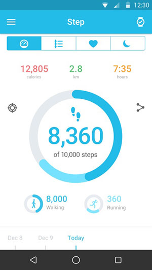

Perguntas frequentes sobre o Wi-Fi Watch
O que posso fazer quando meu Watch não consegue receber e realizar chamadas?
- Certifique-se de que a conexão entre seu WATCH e o dispositivo esteja normal.
- Certifique-se de que seu WATCH não esteja demasiado afastado do seu dispositivo.
- Toque em
no centro de controle do watch para ativar e, em seguida, toque em Sincronizar na página de sincronização do sistema BT do seu telefone para conectar-se.
Para dispositivos Android, seu dispositivo exibe um ícone Bluetooth
após a confirmação e, em seguida, é possível realizar e receber chamadas.
Para dispositivos IOS, haverá dois ID de BT iguais conectados na página de sincronização do sistema do telefone se este estiver preparado para BLE e HFP (para chamada BT).


O MOVETIME Smartwatch não está sendo detectado.
- Ative o Bluetooth se ele estiver desativado.
- Ative o serviço de Bluetooth para procurar dispositivos.
- Reinicie seu Smartwatch ou seu telefone se o Bluetooth estiver ativado mas não estiver funcionando.
- Restaure seu Smartwatch ou esqueça o relógio sincronizado do aplicativo MOVETIME e também da página Bluetooth do sistema do telefone se seu Smartwatch foi sincronizado com outro telefone.
Como obter os resultados mais precisos de sua frequência cardíaca?
Para obter os resultados mais precisos, aperte o WATCH com firmeza ao redor de seu pulso. Mesmo em condições ideais, o WATCH pode não ser capaz de obter uma leitura de frequência cardíaca confiável para todas as pessoas. Para uma pequena porcentagem de usuários, diversos fatores podem impossibilitar a obtenção de uma leitura da frequência cardíaca. Algumas coisas podem ajudar o WATCH a obter as melhores e mais consistentes leituras de frequência cardíaca possíveis:
- A parte de trás do WATCH precisa estar em contato com a pele.
- O WATCH precisa estar preso firmemente ao redor de seu pulso, mas dê alguma folga para que a pele possa respirar e permitir que os sensores realizem seu trabalho.
- Você pode apertar seu WATCH quando fizer exercício físico e soltá-lo depois do treino.
- Os sensores apenas funcionarão se você usar o WATCH na parte superior do seu pulso.
Se seu WATCH não fica no lugar ou sua frequência cardíaca não puder ser medida, aperte um pouco a pulseira. O WATCH deve ser usado apertado, porém confortável.

O que posso fazer quando o WATCH não responde?
Pressione e segure a tecla de Liga/Desliga durante 8 segundos para forçar a reinicialização do WATCH. Apenas para emergências.
Por que meu WATCH às vezes vibra inesperadamente?
- Verifique se você recebeu uma notificação.
- Certifique-se de que seu WATCH não esteja demasiado afastado do seu dispositivo.
O que posso fazer quando a vibração não funciona?
- Carregue e certifique-se de que a bateria está carregada.
- Certifique-se de que a conexão entre seu WATCH e o dispositivo não tenha sido interrompida.
O que posso fazer quando meu WATCH não carrega?
- Certifique-se de que os pinos na doca de carregamento estão alinhados com os pinos na tampa traseira do seu Watch.
- Certifique-se de que o cabo USB esteja inserido firmemente na porta USB.
- Às vezes, se a bateria do seu WATCH está completamente vazia, é necessário algum tempo para ativar a bateria e o sistema.
Por que o consumo de bateria aumenta depois de instalar o aplicativo MOVETIME e de conectar o WATCH ao meu dispositivo?
Isso é normal e o consumo inclui:
- Manutenção da conexão entre o WATCH e o dispositivo.
- Transferência de arquivos entre o WATCH e o dispositivo.
- Desconexão, verificação e reconexão de dispositivos.
No máximo, quantos dispositivos BT 4.0 de baixa energia (BLE) podem ser conectados ao dispositivo?
Apenas pode conectar um dispositivo BLE de cada vez.
O que posso fazer quando o WATCH se desconecta com frequência do dispositivo?
- Certifique-se de que o aplicativo MOVETIME não seja interrompido por uma ferramenta do sistema. Se ele for interrompido, reinicie o aplicativo.
- Certifique-se de que a comunicação entre seu WATCH e o dispositivo esteja normal.
a) Verifique o aplicativo MOVETIME em seu telefone. Se o WATCH se conecta ao dispositivo, você verá um íconeno canto superior direito. Se o WATCH não conseguir se conectar,
será alterado para
no meio do ícone.

b) Se você vir o ícone Bluetoothno WATCH, isso significa que o WATCH não pôde sincronizar com o dispositivo
Como posso realizar uma restauração de fábrica no WATCH?
- Se as indicações acima não solucionarem o problema, tente restaurar o WATCH.
- No aplicativo MOVETIME. Toque em e, em seguida, Watch > Configurações > Restauração de fábrica e restaure seu WATCH.
- Mantenha pressionada a tecla de Liga/Desliga durante 10 segundos para restaurar o WATCH.
O que posso fazer se o WATCH não receber notificações?
Para ativar seu WATCH para receber notificações do MOVETIME, siga as etapas abaixo.
- Vá para o aplicativo MOVTIME > Watch > Notificações e ative as notificações do aplicativo específico.
- Ative o início automático do aplicativo MOVETIME quando o telefone é ligado.
- Adicione o aplicativo MOVETIME à lista de permissões ou à lista de aplicativos protegidos.
- Desative as configurações de economia de energia que desativam o aplicativo quando a tela é bloqueada.
- Vá para Configurações > Notificações > Acesso a notificações > MOVETIME (o acesso pode ser diferente segundo a marca). Desative as notificações MOVETIME e, em seguida, ative-as novamente.
- Reinicie seu smartphone.
Como monitorar o sono?
Use o WATCH quando estiver dormindo e certifique-se de que o WATCH está ligado e com bateria suficiente.
O que posso fazer se houver problema na autenticação de Wi-Fi no Watch?
Mantenha pressionada a tela para ir à interface e esquecer o Wi-Fi atual, e toque em WI-FI novamente e, em seguida, insira o código correto no telefone.